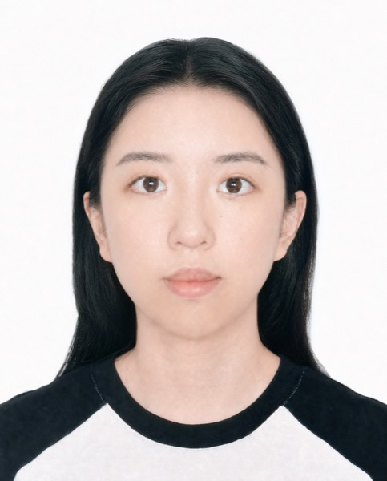

MaskVLA: Visual Masking Against Trajectory Overfitting of Vision-Language-Action Model
IROS 2026Accepted
Visual masking helps VLA policies learn task-relevant features and reduce trajectory overfitting.
PhD Student · The Hong Kong University of Science and Technology
I am currently pursuing a PhD at The Hong Kong University of Science and Technology (HKUST), advised by Prof. Ziqi Wang. I received my BEng in Automation from Harbin Institute of Technology, Shenzhen (HITSZ), China.
My research interests lie in robotics, robot learning, embodied AI, vision-language-action (VLA) models, and robotic assembly. I am interested in building intelligent robots that can perceive, reason, and act in the real world.

My recent work explores generalizable VLA policies and data-efficient learning for real-world robot manipulation.
Visual masking helps VLA policies learn task-relevant features and reduce trajectory overfitting.

Phase-split co-training combines simulated approaches with real contact interactions for data-efficient manipulation.
PhD studies · Current
BEng in Automation